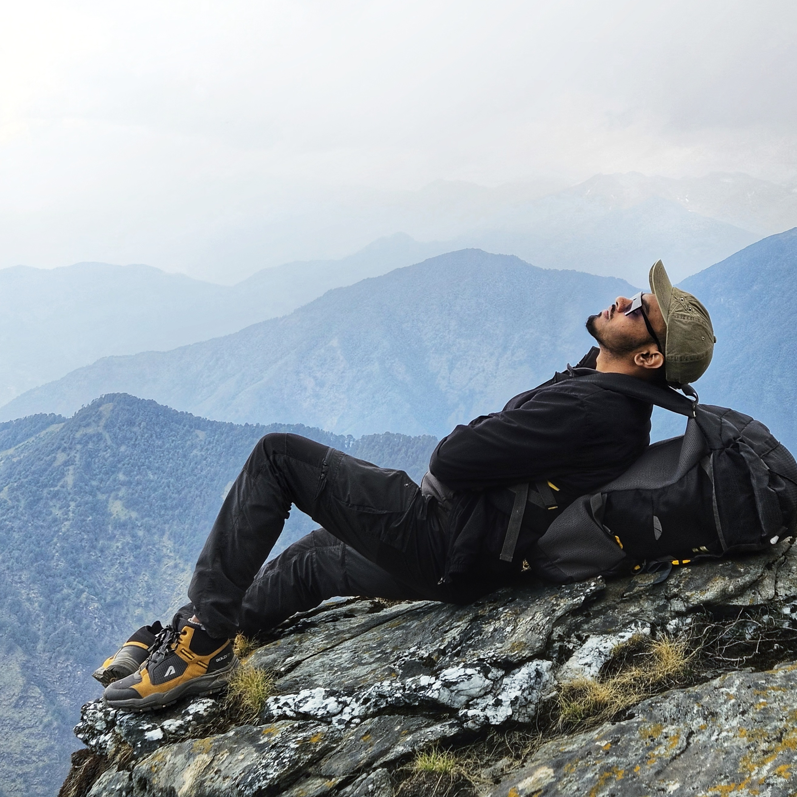

About
Ph.D. researcher in Geophysics at IIT Bombay specializing in AI/ML-driven geophysical inversion. Passionate about translating complex scientific challenges into computational solutions. When not researching, I capture the world through my lens—exploring landscapes, portraits, and moments that tell stories.
Academics & Research
Experience
Ph.D. Researcher – Department of Earth Sciences, IIT Bombay (Present)
- 3D geophysical inversion for mineral exploration using traditional and AI/ML methods
- Bayesian trans-dimensional MCMC framework for seismic data inversion
- Deep learning architectures (CNN, Xception, ResNet) for multi-geophysical data
- Forward modeling and inversion in MATLAB and Python
- IndiaAI Hackathon 2025: Mineral prospectivity mapping
Skills
- Programming: Python, MATLAB
- Web: HTML, CSS, JavaScript
- Geophysics: 2D/3D Inversion, Joint Inversion
- AI/ML: TensorFlow, PyTorch, Deep Learning
- Optimization: Problem-based & Solver-based
Projects
- Joint Inversion Framework (MATLAB)
- 2D Rectangular Mesh-based Forward Modeling
- Optimization Tools & Guidebook
- CNN-based Geophysical Inversion
Photography
Capturing moments through technical precision and creative vision.
Landscapes
Serene Landscape

Nature's Beauty
Portraits

Character & Expression
Events
.jpeg)
Captured Moments